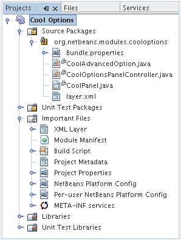

Apache NetBeans
Apache NetBeansLatest release
NetBeans Options Window Module Tutorial
| This tutorial needs a review. You can edit it in GitHub following these contribution guidelines. |
This tutorial demonstrates how to extend the Options window.
| This is not the latest version of this document. It applies to NetBeans IDE 6.0/6.1 only. Click here to see the most up to date version. |
Introduction to Options Window Extensions
Whether you are creating a plugin for NetBeans IDE or for another application, there is a good chance that you want the user to be able to specify settings, such as the location of an external file. The Options window offers a centralized location for all such settings. In the IDE, the Options window is found under the Tools menu and looks as follows:

The NetBeans APIs give you access to the Options window in two different ways. In the first case, you can add a new panel to the Options window. Using this approach, your module will add a new 'primary' panel to the Options window, similar to the 'General' panel or 'Editor' panel shown in the screenshot above. Your panel will, just like these panels, have a name and an image in the top of the Options window, together with its settings in the body of the panel. In the second case, the NetBeans APIs allow you to add a new panel within the Miscellaneous panel, shown below:

In this case, your new panel will have its own tab, just like "Ant" or "Diff" above, together with the settings within a panel in the body of the Options window extension. Whether you add your user settings within a new primary panel or within a tab in the Miscellaneous panel is completely up to you. Factors that might influence your decision are purely personal and a question of your own taste.
At the end of this tutorial, the Options window will be extended with a new panel. In addition, you will be shown how to use the NbPreferences API to store and use the settings that the user specifies in your Options window extension.
Creating the Module Project
We begin by working through the New Module Project wizard. At the end of it, we will have a basic source structure, with some default files, that every NetBeans module requires.
-
Choose File > New Project (Ctrl-Shift-N). Under Categories, select NetBeans Modules. Under Projects, select Module Project and click Next.
-
In the Name and Location panel, type
CoolOptionsin Project Name. Change the Project Location to any directory on your computer. Leave the Standalone Module radiobutton and the Set as Main Project checkbox selected. The panel should now look as follows:

Click Next.
-
In the Basic Module Configuration panel, replace
yourorgherein Code Name Base withnetbeans.modules, so that the whole code name base isorg.netbeans.modules.cooloptions. Add a space to the default Module Display Name, so that it is changed toCool Options. Leave the location of the localizing bundle and XML layer, so that they will be stored in a package with the nameorg/netbeans/modules/cooloptions. The panel should now look as follows:

Click Finish.
The IDE creates the Cool Options project. The project contains all of your sources and project metadata, such as the project’s Ant build script. The project opens in the IDE. You can view its logical structure in the Projects window (Ctrl-1) and its file structure in the Files window (Ctrl-2). For example, the Projects window should now look as follows:

Extending the Options Window
Now that we have a module project, which gives us our source structure, we simply run through another wizard that will create the NetBeans API implementation of an Options window extension. In the wizard, you simply need to specify the type of panel you want to have generated, either a primary panel or a miscellaneous panel, and then the wizard will generate all the required classes and layer.xml registration details for you.
-
Right-click the "Cool Options" project node and choose New > Other. Under Categories, select Module Development. Under File Types, select Options Panel. You should now see the following:

Click Next.
-
In the next panel, specify the type of panel that you want to create and fill in the information required. Initially, this panel looks as follows:

In this tutorial, we assume that we are creating a Miscellaneous Panel, with the following details:
-
Title. Cool Options
-
Tool Tip. Select Cool Options!
Click Next.
-
In the Name and Location panel, you can set the prefix of the classes that will be generated and the package where they will be placed by default. Change the Class Name Prefix to "Cool" and leave the package name unchanged.
Click Finish.
The Projects window should now look as follows:

Building and Installing the Module
We have done no coding whatsoever, but we can already try out our module. When we do so we will simply see our new panel, integrated with the other panels in the Options window. In subsequent sections, we will add settings for the user to make use of.
Installing the NetBeans Module
In the Projects window, right-click the Cool Options project and choose Install/Reload in Target Platform.
The module is built and installed in the target IDE or Platform. The target IDE or Platform opens so that you can try out your new module. The default target IDE or Platform is the installation used by the current instance of the development IDE. Note that when you run your module, you will be using a temporary test user directory, not the development IDE’s user directory.
Using the NetBeans Module
In this section, we take on the role of the user. After a user installs our module, they typically take the steps outlined below to specify a setting in the Options window.
-
Choose Tools > Options from the main menu.
The Options window opens.
-
Select the Miscellaneous panel and notice that your new "Cool Options" panel has been integrated there:

In the next section, we add a text field and button to the panel and we learn how to store the user’s setting when the Options window closes. Then we learn how to load the setting and use it, when appropriate, in the module’s code.
Storing and Loading Preferences
In this section, we begin by designing the Options window extension. Using the GUI Builder, we add a JPanel , a JTextField , and a JLabel . Then we install the module again and we see the result. Next, we begin coding. Using the NbPreferences API , we store the value entered by the user. Storage of preferences is done in the user directory. Then we load the preference into an appropriate place in our code.
Designing the Panel
First, let’s add some Swing components to the panel, to give the user a means of setting a preference.
-
Drag and drop a
JPanel,JTextField, and aJLabelonto the panel. Add a border to theJPaneland set the panel’s background color to the same color as theJPanel. Change the text of theJLabelto "Name". You should now see the following:

-
Install the module again. In the Options window, you should now see the following:

Storing Preferences
In this section, we add code that will store the preference after the user clicks OK in the Options window.
-
Look in the source of the
CoolPanelclass. You should see thestore()method defined as follows:
void store() {
// TODO store modified settings
// Example:
// Preferences.userNodeForPackage(CoolPanel.class).putBoolean("someFlag", someCheckBox.isSelected());
// or for org.openide.util with API spec. version >= 7.4:
// NbPreferences.forModule(CoolPanel.class).putBoolean("someFlag", someCheckBox.isSelected());
// or:
// SomeSystemOption.getDefault().setSomeStringProperty(someTextField.getText());
}The comments in the code present the three ways in which preferences can be stored. The first uses the JDK’s Preferences API. The second uses the NetBeans IDE 6.0 NbPreferences API. The third uses the pre-6.0 System Option class. The third approach is deprecated, while the first does not store preferences in the application’s user directory. The second approach, the NbPreferences API, is the recommended approach. The NbPreferences API is based on the JDK’s Preferences API, but is tailored towards NetBeans applications, in that it stores preferences in the application’s user directory, which is a convenient place to store them since all other user customizations for your application are stored there too.
-
In the
store()method, delete all the comments and add this line:
NbPreferences.forModule(CoolPanel.class).put("namePreference", jTextField1.getText());Press Alt-Enter in the line. Let the IDE specify an import statement for the NetBeans API package called org.openide.util.NbPreferences .
-
Install the module again. Type a name in your Options window extension panel:

-
Click OK. Look in the application’s user directory, within the
configfolder. In theconfigfolder, you should find a folder calledPreferences, containing a properties file for your Options window, as shown below:

-
Open the folder and notice that the preference has been stored there:

Loading Preferences
In this section, we add code that will load the preference. We want the preference, in this case "Harry Potter", to be loaded into at least two places. First, we want the preference to be loaded into the Options window when the application restarts. Secondly, we want to be able to use the preference somewhere in our module. After all, the reason why a preference is set is so that it can be used somewhere else in the code. Finally, we also need to handle the situation where the preference changes. In that case, we need to add a preference listener and use the new value in our code, once the value changes.
-
Look in the source of the
CoolPanelclass. You should see theload()method, defined with comments, similar to those discussed in the previous section.
-
In the
load()method, delete all the comments and replace them with the following:
jTextField1.setText(NbPreferences.forModule(CoolPanel.class).get("namePreference", ""));Now, when you restart the application, the preference is loaded into the Options window.
Next, we will create a new TopComponent . We will only do so to demonstrate how a preference is used. Instead of a TopComponent , you could use any other Java class to use your preference. In other words, this is just an example of using a user’s preference in the context of a module.
-
Right-click the module project and choose New Window Component. Call the Window Component whatever you like and position it anywhere you want it to be. When you have created it, add a
JTextFieldto theTopComponent. This is where we will display the user’s preference.
-
Switch to the
TopComponent’sSource view and add the following lines to the end of the constructor:
Preferences pref = NbPreferences.forModule(CoolPanel.class);
String name = pref.get("namePreference", "");
pref.addPreferenceChangeListener(new PreferenceChangeListener() {
public void preferenceChange(PreferenceChangeEvent evt) {
if (evt.getKey().equals("namePreference")) {
jTextField1.setText(evt.getNewValue());
}
}
});
jTextField1.setText(name);-
Install the module again.
Whenever the application restarts, the current preference in the Options window is shown in the TopComponent . And whenever you change the preference in the Options window, the TopComponent immediately reflects the new value, as soon as OK is clicked in the Options window.
Congratulations! You have successfully completed the Options Window Module Tutorial. You now know how to provide the functionality needed for users to set your module’s options.
Next Steps
For more information about creating NetBeans modules, see the following resources: